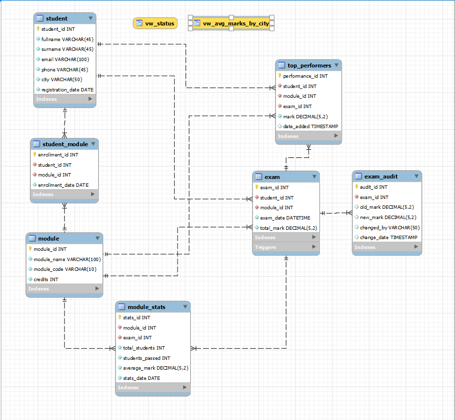

Solving real-world academic data management challenges with MySQL
The Academic Records System is a comprehensive MySQL database solution designed to address critical challenges in academic data management for higher education institutions. This project was developed as part of the Database Management (MySQL) course at my Institute.
My Institute was facing several critical issues in their academic records management:

Comprehensive database functionality addressing all project requirements
Implemented CHECK constraints, foreign keys, and unique constraints to ensure data validity and prevent invalid registrations.
Automated calculation of pass/fail rates, distinctions, and average marks with daily statistics updates.
Implemented transaction management with appropriate isolation levels to handle multiple simultaneous users.
Comprehensive logging of all exam mark changes with before/after values and user information.
Automatic identification and storage of exceptional student performances (marks > 90).
Created updatable views for simplified access to student status and performance metrics by city.
Technical implementation of database objects and functionality
The database consists of 6 main tables with appropriate relationships and constraints:
Implemented comprehensive business logic through stored procedures and functions:
Implemented triggers to automate audit trails and performance tracking:
Created updatable views to simplify complex data access patterns:
Successfully addressed all project requirements with robust database solutions
The database was populated with realistic sample data to demonstrate functionality:
Created a comprehensive database backup with all schema definitions and sample data, ensuring the project can be easily deployed and tested.